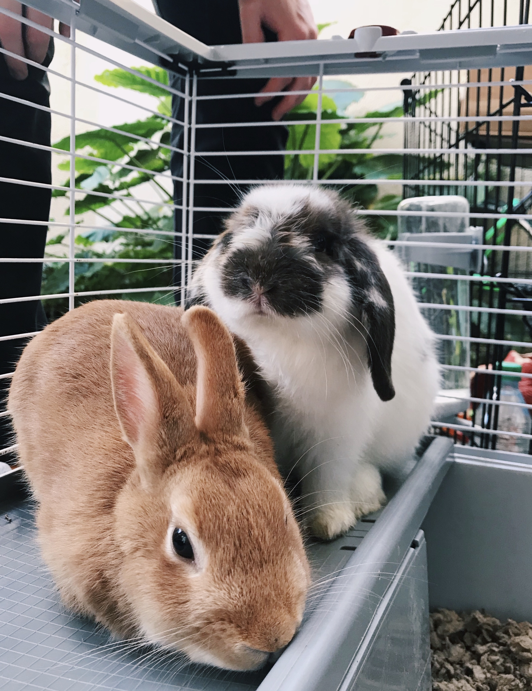

2. Try different toys. Not all buns like the same things. Some like to flip and toss, some like to roll things, some like to make noise.
3. Change toys around and offer different things to play with so your rabbits (like children) don’t get bored.
4. Encourage your rabbit to play by talking to her in happy or excited higher pitched tones. Let her know you are having fun and that she is doing a good job!
Toys are entertaining. They help keep your bunny from getting bored while confined in their cage, as well as help keep them from getting into (the wrong) things when they are out and playing in the house. A rabbit that is kept
interested and entertained will generally live longer because his mind is engaged, keeping him from getting bored and depressed.
Toys provide exercise. Bunnies need safe ways to exercise and play, which helps keep their bodies and minds healthy. Digging, chewing, climbing, flinging, hiding, running through tunnels– these are all things that bunnies like,
want, and need to do.
Toys are a diversion. They are a great way to redirect a bunny from doing damage to your home by shredding or chewing. Bored bunnies, like bored children, tend to get into things they should not. Plus, bunnies teeth grow continuously,
and they must have safe wooden toys to chew on to help keep them filed down.
- Wooden Chew Toys- for flinging, or those that hang from the cage for chewing, pulling & batting.
- Cardboard Boxes-for crawling in & out, hopping upon and chewing. Fill a box with shredded newspaper or dried leaves, so your bunny can jump in and dig!
- Paper towel or toilet paper tubes– You can leave some paper towels, so your bunny can shred happily.
- Tissue Box– Remove plastic, stuff the tissue box with hay and let your bunny try to get it out. (Be sure no heads get stuck inside!)
- Paper Bags– to shred and shove around.
- Untreated straw or wicker baskets– for chewing and can be filled with hay or straw for digging.
- Pine Cones– Must be washed and dried for at least 4 months.
- Phone Books– without the shiny cover, for ripping & shredding
- Cat or Bird Toys– can be rolled or tossed. Make sure there are no small, removable, or chewable pieces.
- Metal Lids– from any kind of jar. They are great for flipping around and making noise!
- Baby Toys– Toys that are hard plastic that teeth cannot break or eat through; such as keys, stacking cups or stacking blocks that can be knocked over, fish links, rattles, etc.
- Quaker Oats Boxes– You can cut out the other end, or not…
- Whisk Brooms– made of broom straw only
- Towels– for bunching and scooting (with paws); Make sure your bunny doesn’t eat the towel!
- Wood Branches & Twigs– Pesticide free & aged at least three months Apple can be chewed while fresh, but Cherry, Peach, Apricot, Plum, and Redwood are all poisonous!!!
- Balls–Wire cat balls, plastic balls, balls they can nudge, paw and/or fling.
- Quik-Tubes– Cardboard tubes used for setting cement for patio posts, etc. make great tunnels for bunnies to zip through, chew, hop over, and hide in. They only cost about $6 at Home Depot and other similar stores!
Toys for rabbits?! You bet!

A boring bunny is…a bored bunny!
We can’t be with our bunnies all the time but because they like to play and be entertained, it is important that we provide them with toys of their very own. Plus, bunnies are fun to play
with! We encourage you to get right down on the floor with your bunny. Let her check you out, jump on you, nap on your back, get down nose to nose with your bunny and giver her kisses!